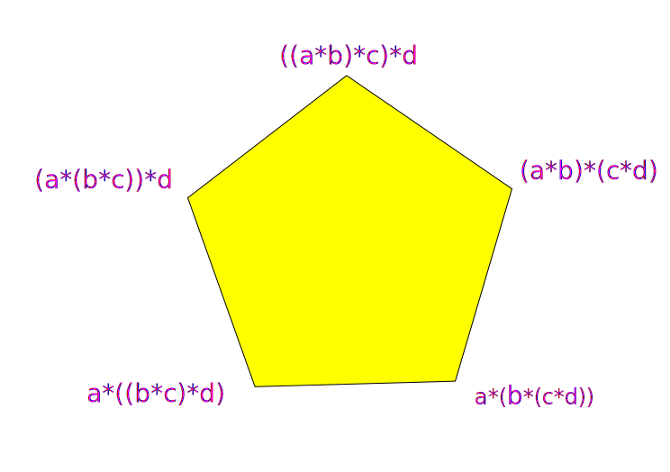

Homotopy Type Theory
Siddhartha Gadgil
Department of Mathematics
Indian Institute of Science
Bangalore

Foundations of Mathematics
Words and Rules
Sets and Predicate Calculus
Why we need new foundations
Formal languages
- Consider the following statements
- $\forall (n \in \mathbb{N})\ n < n + 1$ -- true
- $\exists (n \in \mathbb{N})\ n = n + 1 $ -- false
- $\exists (n \in \mathbb{N})\ n = + + \forall m $ -- not well-formed
- $\left\vert\sqrt{-1} + \sqrt[3]{1}\right\vert <1$ -- not well-defined
- A formal language has
- A vocabulary,
- Grammar - rules for forming expressions from simpler ones (starting with the vocabulary).
- All well-formed expressions are well-defined.
- Rules are purely syntactic , i.e., in terms of concatenating words, matching patterns (formed by concatenation), substituting words by other words etc.
First-order languages
- A first-order language has vocabulary consisting of
- Variables - can be taken to be a fixed countable set.
- Constants.
- Functions $f$; a function $f$ has degree $n\in\mathbb{N}$.
- Predicates (relations) $p$ ; a relation has degree $n\in\mathbb{N}$.
- Special symbols $\Rightarrow$, $\iff$, $\wedge$, $\vee$, $\forall$, $\exists$, ...
- We form two kinds of expressions from these, terms and formulas .
- Terms and formulas may depend on values of some variables.
- Terms represent objects in the Universe.
- Formulas are either true or false.
Terms and Formulas
- Terms are expressions of the forms:
- A variable $x$.
- A constant $c$.
- $f(t_1, t_2, \dots, t_n)$ with $f$ a function of degree $n$ and $t_1$, $t_2$, ..., $t_n$ terms.
- $p(t_1, t_2, \dots, t_n)$ with $p$ a predicate of degree $n$ and $t_1$, $t_2$, ..., $t_n$ terms.
- $P \Rightarrow Q$, $\neg P$, $P\wedge Q$ etc. for formulas $P$ and $Q$.
- $\forall x\ P$ and $\exists x\ P$ for a variable $x$ and a formula $P$.
Deduction and theories
- We can deduce formulas from other formulas using the rules of deduction.
- The main deduction rule is Modus Ponens : given $P$ and $P\Rightarrow Q$ we deduce $Q$.
- A theory is a language together with a collection of statements, called axioms in the language.
- A statement is deducible in a theory if it can be obtained from the axioms by the rules of deduction.
- A theory is consistent if, for a formula $P$, we cannot deduce both $P$ and $\neg P$.
- Gödel's completeness theorem says that deducible statements in a theory are exactly the true statements, in terms of models of the theory.
Set theory
- The language of set theory has:
- a single constant $\phi$,
- predicates $\in$ and $=$ of degree $2$.
- The usual axioms are called ZFC (Zermelo-Fraenkel and the axiom of choice).
- By Gödel's incompleteness theorem, we cannot prove that Set Theory is consistent.
- However, as Gödel's incompleteness theorem applies to any formal system rich enough for usual mathematics, this is not a reason for avoiding any specific formal system.
“ Since the first half of the 20th century mathematics has been presented as a science based on ZFC and ZFC was introduced as a particular theory in Predicate Logic.
“ Therefore someone who wanted to get to the bottom of things in mathematics had a simple road to follow - learn what Predicate Logic is, then learn a particular theory called ZFC, then learn how to translate propositions about a few basic mathematical concepts into formulas of ZFC, and then learn to believe, through examples, that the rest of mathematics can be reduced to these few basic concepts.”
Why new foundations?
- Mathematics formalized in ZFC in predicate calculus, even with category theory, is
- very verbose,
- highly opaque.
- Formalization of mathematics that is much closer to actual mathematics will
- reduce wrong mathematics in the literature.
- help computer assisted mathematics.
- facilitate semantic tools for doing mathematics.
- the body of mathematical knowledge will become mostly mathematics, not meta-mathematics.
“ The roadblock that prevented generations of interested mathematicians and computer scientists
from solving the problem of computer verification of mathematical reasoning was the
unpreparedness of foundations of mathematics for the requirements of this task.”
“ Formulating mathematical reasoning in a language precise enough for a computer to follow
meant using a foundational system of mathematics not as a standard of consistency applied only
to establish a few fundamental theorems, but as a tool that can be employed in everyday
mathematical work. ”
Type theories
Syntax with types
Types for sets
Propositions as Types
Terms and Types
- In a type theory, every term has a type .
- We denote the term $a$ having type $A$ by $a: A$.
- We can form terms from simpler terms according to syntactic term formation rules.
- Term formation rules depend only on the types of the simpler terms.
- We have rules telling us the type of the newly formed term.
- We have syntactic type formation rules allowing the formation of new types.
- Terms include both the terms and formulas of first order logic.
Types as Sets
- In type theory, types replace sets, with $a : A$ replacing $a \in A$.
- However, while sets can be constructed using axioms, types can be constructed only using the (syntactic) type forming rules.
- Nevertheless, type forming rules are sufficiently rich to construct all sets normally encountered in mathematics.
Function types and functions
- Given types $A$ and $B$, we can form the type $A \to B$ of functions from $A$ to $B$.
- Given $f : A \to B$, and $a : A$, we can form the term $f(a) : B$.
- We also need rules for forming functions (i.e., terms whose type is a function type).
More Types and Terms
- As a consequence of the type and term forming rules of any type theory we consider, we can form some useful types and terms.
- For types $A$, $B$, we can form the product type $A\times B$.
- Given terms $a : A$ and $b : B$, we can form the pair term $(a, b) : A \times B$.
- For types $A$, $B$, we can form the coproduct (disjoint union) type $A\oplus B$, and two inclusion functions $i : A \to A \oplus B$, $j : B \to A \oplus B$ (which can be applied).
- We have a type $\mathbb{0}$, so that we never have $a : \mathbb{0}$.
- We have a type $\mathbb{1}$, and a unique term $*$ with $* : \mathbb{1}$.
Dependent type theories
- In dependent type theories, types are also terms.
- The type of a type is a universe.
- A universe $\mathfrak{U}$ is a type so that if $A : \mathfrak{U}$, $A$ is a type.
- A dependent type is a type (family) that depends on terms $a : A$ of some given type $A$ (more generally several terms).
- Equivalently, a type family is a function (or iterated function) with codomain a universe.
- Type families are analogous to fiber bundles.
$\prod$-types and $\sum$-types
Fix a type family $B : A \to \mathfrak{U}$.
- We can form the type $\prod_{a : A} B(a)$ of dependent functions, i.e., sections of the bundle $B$.
- Dependent functions $f$ generalizes a function $f : A \to B$, with $f(a)$ specified to be in a codomain $B(a)$ depending on $a : A$.
- If $f : \prod_{a : A} B(a)$ and $a : A$, we can form the term $f(a)$ of type $B(a)$.
- We can form the type $\sum_{a : A} B(a)$ of dependent pairs, i.e., the total space of the bundle $B$.
- For $a : A$ and $b : B(a)$, we can form the dependent pair $(a, b) : \sum_{a : A} B(a)$.
Propositions as types
- A type $A$ is inhabited if there is a term $a$ with $a : A$.
- By propostion we mean a logical statement that must be true or false.
- We represent propositions by types.
- If a type $A$ is viewed as a proposition, a term $a : A$ is a proof of (or witness to) $A$.
- In particular, a proposition is true if and only if the corresponding type is inhabited.
- Note that we must be able to form types representing propositions of interest in mathematics by the type formation rules.
Combining propositions
Let $A$ and $B$ be types, regarded as representing propositions.
- The proposition $A \Rightarrow B$ is represented by $A \to B$.
- The propostion $A\wedge B$ is represented by $A \times B$.
- The proposition $A \vee B$ is represented by $A \oplus B$.
- The proposition $\neg A$ is represented by $A \to \mathbb{0}$.
Quantifying propositions
- A proposition depending on a variable $x : A$ is represented by a type family $P : A \to \mathfrak{U}$.
- The proposition $\forall x\ P(x)$ is represented by $\prod_{x: A} P(x)$.
- The proposition $\exists x\ P(x)$ is represented by $\sum_{x : A} P(x)$.
Inductive types and type families
- While we can build types from other types, the above rules do not let us construct types such as $\mathbb{N}$.
- This is achieved using rules to form inductive types and inductive type families.
- Remarkably, we can also form type families corresponding to predicates (i.e., propositions) such as $\leq$ and $=$ as inductive type families.
(Homotopy) Type theory
Terms, Types, Rules
Inductive types
Propositions as types
Proofs by inductions
Terms, Types, Universes
- Terms , i.e., (first class) mathematical objects, include not just numbers, functions, spaces but also theorems, proofs and definitions.
- Every term has a type , generally unique.
- We write $a : A$ to denote the term $a$ having type $A$.
- Types are also terms, whose types are universes.
- A universe is a type whose members are types.
In programming language design, a first-class citizen (also type, object, entity, or value) in a given programming language is an entity which supports all the operations generally available to other entities. These operations typically include being passed as an argument, returned from a function, and assigned to a variable.
Rules: construction, equality, type
- We have rules to introduce terms (including types), individually or in groups, into the context.
- As always, such rules depend on pre-existing terms only through their types.
- Rules also let us make two kinds of judgements:
- that a term $a$ is of type $A$.
- that two terms are equal by definition .
- Note that terms can be equal without being so by definition.
- We will introduce a relation (type family) propositional equality extending definitional equality.
A finite type : Booleans
- We can introduce a finite type together with its elements.
- For instance, we can introduce the Boolean type with two members, true and false.
- In terms of code in the language/proof-assistant Agda,
- Note that we do not have rules saying (directly) that each element of $Bool$ is one of $true$ and $false$, or that $true\neq false.$
data Bool : Type where
true : Bool
false : Bool
Function types, functions and applications
- Given types $A$ and $B$, we can introduce the function type $A \to B$, whose members are functions.
- Given $f: A \to B$ and $a : A$, we get a term $f(a) : B$.
- We can construct a function $f: A \to B$ by giving an expression of type $B$ in terms of a variable $a : A$ and other terms in the context.
- For specific domains $A$, we have additional rules for constructing functions.
idBool : Bool → Bool -- lambda
idBool x = x
alwaysTrue : Bool → Bool
alwaysTrue x = true
Definition by cases
- If the type $A$ is a finite type, we can define a function by enumerating over all members.
- Implicit in being able to make such definitions are statements saying that $true$ and $false$ are distinct and the only members of $Bool$.
- This is a special instance of recursive definitions.
- Formally, in homotopy type theory we have rules for introducing a recursion function, which is applied to the definition data to give recursive defintions.
not : Bool → Bool -- case defn
not true = false
not false = true
notnot : Bool → Bool -- lambda
notnot x = not(not(x))
Currying functions of several variables
- We do not need additional types for functions of more than one variable.
- Instead we Curry such a function $(A, B) \to C$, giving an iterated function of type $A \to B \to C := A \to (B \to C)$.
- Namely, we associate to $g(x, y)$ the function $$x \mapsto (y \mapsto g(x, y)).$$
- Though natural numbers are not finite, they are freely generated by a finite number of constructors.
- Such a type is called the inductive type freely generated by the given constructors.
- Rules giving the allowed types of the constructors are a little subtle.
- We can define functions recursively on inductive types, by specifying in all cases.
- Formally, we can introduce recursion functions and apply them to the definition data.
- We generalize functions $f : A \to B$ to dependent functions, so that $f(a)$ has a type $B(a)$, depending in general on $a : A$.
- More precisely,
- A type family $B: A \to \mathfrak{U}$ is a function with codomain a universe, so all its values are types.
- Given a type family $B: A \to \mathfrak{U}$, we can construct a corresponding type $\prod_{a : A} B(a)$ of dependent functions.
- When we apply $f : \prod_{a : A} B(a)$ to $a : A$, we obtain $f(a) : B(a)$.
- Dependent functions are just sections of bundles.
- Constructions of dependent functions are analogous to those of functions.
- We have a type family associating to each $n : \mathbb{N}$ the type of vectors of length $n$ with entries in $\mathbb{N}$.
- This is an inductive type family with two constructors.
- We can define dependent functions to this type family inductively.
- Formally, we can construct an induction function and apply it to the data.
- We can define (dependent) functions on inductive type families recursively (inductively).
- However, we must define these simultaneously on all types in the inductive type family.
- Using our foundations, we can also make some practical calculations.
- We view propositions as types, with members of the type witnesses (or proofs).
- Basic propositions can be constructed as inductive types.
- We can prove results using our methods of construction.
- For propositions $A$ and $B$ viewed as types, $A \Rightarrow B$ corresponds to $A \to B$.
- A contradiction corresponds to the type $\mathbb{0}$ (also called $False$) which has no elements.
- We prove contradictions by inductive definitions which we can see have no cases.
- In mathematics (and software), we often define functions subject to the argument satisfying some condition.
- This can be done very elegantly with propositions as types.
- For a fixed type $A$, propositional equality is given by the identity type family freely generated by reflexivity.
- This is an inductive type family.
- However, for fixed $a: A$, $a = a$ is not an inductive type, i.e., it is not suffiicient to define functions on $refl(a)$.
- We interpret
- Types as spaces.
- Terms of a type as points of the space.
- Functions $A \to B$ as continuous maps $A \to B$.
- For a type $A$ and terms $x, y: A$, the identity type $x = y$ as paths in $A$ from $x$ to $y$.
- We do not actually construct spaces, i.e., sets with topology, starting with a type.
- Instead we make topological (specifically homotopy theoretic) constructions and prove topological results in type theory.
- A practical consequence for type theories is that we get a canonical type theory.
- As above, for a type $A$ and $x, y : A$, a term $p : (x = y)$ is interpreted as a path from $x$ to $y$.
- We can invert such a path - this is just the symmetry function on identity types $(x = y) \to (y = x)$.
- Similarly for $x, y, z: A$, the product of $p : x = y$ and $q : y = z$ is given by the transitivity of equality function $(x = y) \to (y = z)\to (x = z)$.
- For $x, y, z : A$, given paths, $p : x = y$, $q : y = z$ and $r: z = w$, with $x, y, z, w : A$, we can prove that there is a path of paths, i.e., a homotopy, between $(p * q) * r$ and $p * (q * r)$.
- Such a homotopy, which is constructed by induction, is just an element of $(p * q) * r = p * (q * r).$
- Thus, considering paths up to homotopy, we get the fundamental groupoid of a type.
- We can instead consider the non-associative products on paths directly, together with a higher structure, namely a homotopy $(p * q) * r \sim p * (q * r)$ for paths $p$, $q$ and $r$ as above.
- This process continues to give an $\infty$-groupoid structures on types, from the induction principle for identity type families.
- The homotopy hypothesis says that $\infty$-groupoids are homotopy types of spaces.
- A based type is a type $A$ together with a term $a : A$.
- We can associate to a based type $(A, a)$ its loop space, which is the based type $(a = a, refl(a))$.
- We have a product on the loop space, using which we can define its fundamental group.
- Further, iterating this process, we can define higher homotopy groups.
- We can show that any type family $P : A \to \mathfrak{U}$ is a fibration, i.e., we can lift paths and homotopies.
- Using path lifting, given $x, y: A$ and an equality $p: x = y$, we can define a transfer function $p_* : P(x) \to P(y)$.
- This allows us to transfer structure between equal objects, but depending on the choice of equality.
- If $x, y: A$, $p: x = y$ and $f: \prod_{a : A} P(a)$ then $f(y) = p_*(f(x))$.
- As a consequence of Voevodsky's univalence axiom, isomorphic types are equal, making the transfer very useful (but still consistent).
- An axiom here is a term of a specified type, which we introduce. This has no given properties other than its type.
- We can define when a function $f: A \to B$ is an equivalence of types, essentially like homotopy equivalence.
- This lets us construct the type $A\simeq B$ of equivalences from $A$ to $B$.
- There is a natural inclusion $A = B \to A \simeq B$.
- Voevodsky's univalence axiom says that this is an equivalence.
- This is the uniqueness part of universes being classifying spaces for types.
- A homotopy $n$-type is the homotopy type of a space with trivial homotopy groups above dimension $n$.
- We can define this inductively, with the homotopy type of a space $X$ a homotopy $(n + 1)$-type if for $a, b : X$, the path space $\Omega(X; a, b)$ is a homotopy $n$-type.
- We can start the induction with $n = -2$, where we require $X$ to be contractible (in particular non-empty).
- This hierarchy gives definitions in type theory.
- Further, we can truncate a type canonically to an $n$-type.
- A set is a space with all of its components contractible.
- A type $A$ is a set if for $x, y: A$ and $p, q: x = y$, we have $p = q$.
- A mere proposition is a type which is either empty or all of its elements are equal.
- Formally, $$isPropn(A) = \prod_{x : A} \prod_{y : A} (x = y).$$
- The concept of mere propostions, as well as propositional truncation, allow consistent mixing of classical logic with the type theoretic form.
_&_ : Bool → Bool → Bool --curried function
true & x = x
false & _ = false
Natural numbers : an inductive type
data ℕ : Type where -- infinite type
zero : ℕ
succ : ℕ → ℕ
Recursive definitions
even : ℕ → Bool -- recursive definition
even zero = true
even (succ x) = not (even x)
_+_ : ℕ → ℕ → ℕ
zero + y = y
succ x + y = x + (succ y)
Lists : Another Inductive type
data ℕList : Type where --list type
[] : ℕList -- empty list
_::_ : ℕ → ℕList → ℕList -- add number to head of list
mylist : ℕList
mylist = 3 :: (4 :: (2 :: [])) -- the list [3, 4, 2]
Dependent functions and type families
Vectors : an inductive type family
data Vector : ℕ → Type where -- inductive type family
[] : Vector 0
_::_ : {n : ℕ} → ℕ → Vector n → Vector (succ n)
countdown : (n : ℕ) → Vector n -- dependent function
countdown 0 = []
countdown (succ n) = (succ n) :: (countdown n)
Functions on type families
sum : {n : ℕ} → Vector n → ℕ
sum [] = 0
sum (x :: l) = x + sum l
sumToN : ℕ → ℕ -- calculation
sumToN n = sum(countdown n)
Propositions from inductive types
data isEven : ℕ → Type where
0even : isEven 0
+2even : (n : ℕ) → isEven n → isEven (succ(succ(n)))
4even : isEven 4
4even = +2even _ (+2even _ 0even)
data False : Type where
1odd : isEven 1 → False
1odd ()
3odd : isEven 3 → False
3odd (+2even .1 ())
Functions with conditions
half : (n : ℕ) → isEven n → ℕ
half .0 0even = 0
half .(succ (succ n)) (+2even n pf) = succ(half n pf)
A proof by induction
double : ℕ → ℕ
double 0 = 0
double (succ n) = succ(succ(double(n)))
thm : (n : ℕ) → isEven (double n)
thm zero = 0even
thm (succ n) = +2even _ (thm n)
halfOfDouble : ℕ → ℕ
halfOfDouble n = half (double n) (thm n)
Some More types
data True : Type where
qed : True
data False : Type where
data _×_ (A B : Type) : Type where
_,_ : A → B → A × B
data _⊕_ (A B : Type) : Type where
ι₁ : A → A ⊕ B
ι₂ : B → A ⊕ B
data Σ (A : Type) (B : A → Type) : Type where
_,_ : (a : A) → (B a) → Σ A B
Identity type family
data _==_ {A : Type} : A → A → Type where
refl : (a : A) → a == a
sym : {A : Type} → {x y : A} → (x == y) → (y == x)
sym (refl a) = refl a
_&&_ : {A : Type} → {x y z : A} → (x == y) → (y == z) → (x == z)
(refl a) && (refl .a) = refl a
Homotopy type theory: Types as Spaces
Equality and Paths
$\infty$-groupoids from induction for equality
Type families as fibrations
Homotopy $n$-types (dimension)
Classifying spaces and Univalence
Synthetic homotopy theory
Types as Spaces
Paths, Products, Homotopy
Fundamental groupoids and $\infty$-groupoids
Associativity up to homotopy : the Pentagon
Loop spaces and homotopy groups
Type families as fibrations
Classifying spaces and Univalence
Homotopy $n$-types
Sets and mere propositions
Higher inductive types
In analogy with attaching cells of dimension $2$ and above, we can introduce (consistent) rules for introducing higher inductive types.
Synthetic homotopy theory
In the other direction, by axiomatizing type theoretic principles, we can develop synthetic homotopy theory, where the primitive concepts are spaces, points, maps, paths etc. but without requiring sets or topologies on them.